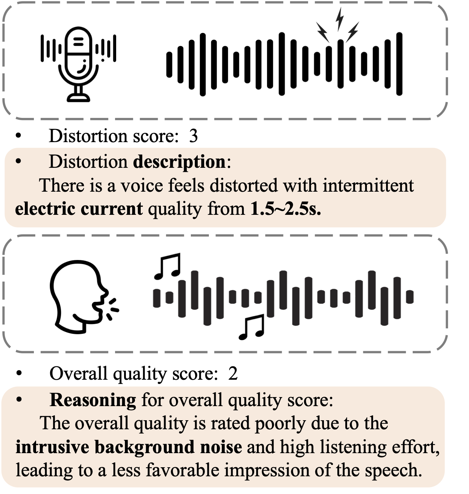
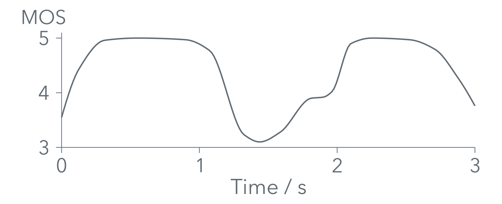

On the Granularity of Speech Quality Assessment
Introduction
Speech quality assessment (SQA) refers to the determination of the quality of speech. This is a subfield in speech processing in general, but it has been receiving increasing attention recently due to the rapid development of generative AI. To me it is a very interesting and complicated tpoic because, unlike many other tasks in speech processing like automatic speech recognition (ASR), automatic speech verification (ASV), enhancement or separation, there is no ground truth in SQA as it is very subjective.
This article is not a rigorous scientific paper but rather an essay, and I only want to talk about one thing: the granularity of SQA. Before explaning what I mean by “granularity”, we must first give a definition of SQA, and mine is a super broad one.
Definition 1 (Speech quality assessment)
Input: an input speech, with optional conditions.
Output: the speech quality
As examples, all implementations in Table 1 are valid SQA metrics.
| Implementation | Condition | Output |
|---|---|---|
| Waveform L2 distance | a reference waveform (with the same length as the input speech) | the L2 distance betweent the two waveforms, which is a scalar |
| Word error rate (WER) | the text that the speech is supposed to articulate | the edit distance between the text and some transcription of it (mostly obtained with an ASR model), which is a scalar |
| Mean opinion score (MOS) test | no condition | the mean of multiple human opinion scores, which is a scalar |
| Speech emotion recognition (SER) accuracy | a discrete emotion label | accuracy of the recognized emotion from an SER model with respect to a “ground truth” emotion label |
These implementations of SQA do not specify what aspect is being evaluated. For instance, a waveform L2 distance of zero means it perfectly matches the refernece, but how do we interpret a high waveform L2 distance? That might depend on other factors. WER, on the other hand, might be interpreted as a direct indicator of intelligibility, is often highly related to naturalness [1].
Now comes my definition of granularity in SQA:
Definition 2 (Granularity in speech quality assessment) The level of details in the output of a speech quality assessment model.
As we move on, you will get a sense of what this means. Let’s start with the coarsest one.
A single score: the coarest granularity
This is easy to understand: you input a speech sample, you get a single score. I would claim over 90 percent of the existing SQA metrics fall into this category. MOS tests obviously fall into this category. Some other metrics that are not that obvious all fall inside this, including WER (although it requires a reference text), SECS (speaker embedding cosine similarity) (it requires a reference speech sample), AB preference tests (it also requires a “reference” speech sample), and SER accuracy (which requires an emotion label).
An obvious criticism is that it can be too vague. This has two meanings: first, we don’t know “what kind of quality” this scalar is measuring. This is especially the case in listening tests, because human can be subjective and have different opinions, even with the same sample. For instance, a speech sample from a TTS system can be a five out of five because of its studio-level quality, but can be a two out of five because the prosodic pattern is not humanlike whatsoever. It is difficult to infer in what aspect the speech sample is bad.
Second, if we receive a low score, we don’t know where in the speech sample is wrong. This is particularly important when the distortion is non-stationary. Take synthetic speech as an example. A decade ago, where conventional, parametric vocoders were still used, TTS speech samples often sounded robotic, and the robotic feeling in the first second is the same as that heard in the last second. However, state-of-the-art TTS models nowadays have a different problems – generative modeling have made progress to get rid of that robotic sound, but with the autoregressive models we are using, there may be hallucinations, which means that the speech sample may sound completely fine, until the model messes it up in the very last second. Similar situation may happen in transmitted speech like VoIP, where packet loss happens in a non-stationary fashion, i.e., we don’t know when it will take place.
These two critiques lead to the following two granularities.
Multiple scores
Outputing multiple scores is obviously more informative than outputting a single score. From the technical point of view, one could question how different is outputing multiple scores from outputing a single score, if we treat each dimension separately? Indeed, say we are talking model-based metrics, then depending on the design, the decision of generating one score might not involve considering the others. However I think a really important difference is to design a minimal set of meaningful dimensions and consider them altogether.
Let’s look at a few examples first.
- A well-known implementation is defined in the ITU-T P.835 [2] subjective evaluation methodology, which is a protocol that contains three scores: speech signal quality (SIG), background intrusiveness (BAK), and the overall quality (OVRL). P.835 was original designed for evaluating noise surpressors, where researchers wanted to avoid either (1) overly surpressing the noise, resulting in unnatural output (i.e., high BAK, low SIG), or (2) retaining the human voice too well such that the noise remains (i.e. high SIG, low BAK). The DNSMOS P.835 is the automatic realization and has been widely used [3].
- Another example is NISQA [4]. In addition to the overall speech quality, the authors adopted following dimensions: noisiness, coloration and discontinuity, which were claimed to be orthogonal to each other [5], and loudness, which is not entirely orthogonal to the other dimensions [6].
- The Meta AudioBox Aesthetics [7] is the latest, well-adopted example. The authors claimed that “after consulting experts working in the audio production domain and conducting pilot user studies”, they established four dimensions: production quality (PQ), production complexity , content enjoyment (CE), and content usefulness (CU). While the motivation of designing the dimensions in this fashion is unknown, the authors showed that these dimensions are “usually not strongly correlated”.
So let’s say you are the participant in a listening test and you are asked to give three scores defined in ITU-T P.835, i.e., SIG, BAK, and OVRL. You might be like, okay, for BAK I am only going to focus on whether there are noises in the background, and for SIG I am only going to focus on the signal quality, and I am going to try to let the decisions of these two scores be independent from each other. Then, my OVRL score is going to be a comprehensive decision depending on my BAK and SIG scores. The point here is that if human are given a set of scores to decide, there is going to be an internal decision making process, and in my opinion, this is the key to maximize the agreement between listeners, which ends up with less noisy results. This is not always the same when it comes to model designing, but I think we should have our model reflect this process.
Now for desinging the set of dimensions, I think there can be several principles. One way is to make the dimensions orthogonal to each other. This is straightforward: we won’t want a bunch of scores that basically measure the same aspect. But I think another way is to design meaningful, intuitive dimsneions. Some important aspects are just meant to entangle with each other: a speech sample needs to be first intelligible in order to be considered natural, and for it to be intelligible it must not be noisy, and so on. In the end, it all comes down to finding the right trade-off between explanability and conciseness.
Localized scores
This is a very underexplored area which is gaining attention [8], [9], [10]. There are many realizations to generating localized scores. For instance, in Figure 1 which is the example in the QualiSpeech paper [11] (c.f., Figure 1), only the time stamps of the problematic areas are outputted.

But we can easily imagine that this is difficult to implement. Another way is to output frame-level scores. This idea was first proposed in [8], and they proposed a model called ChunkMOS – by the name, it outputs chuck-wise scores. See Figure 2 for illustration.

Easily we can imagine many design choices: what frame size and shift should be used? But apart from these, I think an important question is: how do we evaluate such models? One can imagine that the task of outputting localized scores is similar to audio even detection, so we may use metrics in that field. But then we need to decide some threshold, and personally I think investigating how to set the “perceptually” optimal threshold will be an interesting question. What I mean is that, say there is a noise from 1-2s. To what noise level (in the scale of, say, SNR) do human start to think “okay this is too noisy that it is hurting the quality”?
The above-mentioned methods are “purely” model-based – the models are directly trained to output localized scores. I would like to point out that certain conventional metrics – mostly distance-based ones – can produce localized scores naturally, usually as by-products. For instance, WER is calculated based on the edit-distance of the transcribed text and the reference text, so we can treat where the injection, deletion and substitution errors happen as localized socres.
Free-form text
Outputting a natural language description of the speech quality is no doubt the most informative and gives us the max explanability. This paradigm, also known as descriptive SQA, is gaining much more attention in the past two years thanks to, undoubtedly, LLMs [11], [12], [13], [14].
If we really think about it, things are very complicated when it comes to free-form text. First, how do we define the “ground truth”? We need to first be careful not to end up with the model simply doing captioning. Modern LLMs are prone to the verbosity bias [15] where they tend to “talk too much”. A description like “the voice, described as that of a middle-aged man, has a calm yet somewhat mechanical tone” does not provide much information on the quality. What we want instead is diagnosis: just like the example we see in Figure 1, the key to descriptive SQA is to output information only related to speech quality.
Also, similar to what I mentioned about thresholds in outputting lozalized scores, the model needs to decide “how much to say”. This is again subjective, thus difficult to define a ground truth for the model to learn.
The final painful question is how do we evaluate these systems. Previous works often used commonly seen metrics like BLEU, ROGUE, BERTScore, or simply use another LLM. But since we are essentially evaluating LLMs, I guess we need a more sophisticated way.
Concluding remarks
At first sight, doing SQA with a finer granularity seems to be better, but as we can see, they all come with their own problems. My opinion is that in the end, people don’t want multiple scores or free-form text. I think there’s a very important preperty of outputting single scores, which is comparability. After all, the simpler the better! In the end, we often just want to compare whether sample A (from system A) is better than sample B (from system B) – this happens in both scientific research and the commercial world. Another contributing factor is the recent increasing need to use SQA in RL-based post-training and data-filtering. These applications all require outputting single scalars.
In my opinion, outputting in a finer granularity is not the end goal. What we ask for is the model to base its decision on evidence! It’s fine to output a single score – as long as the model tells us why it made that decision. That is, after all, the definition of explanability in machine learning.
References
Cite this essay
@misc{huang-sqa-granularity,
author = {Huang, Wen-Chin},
title = {On the Granularity of Speech Quality Assessment},
year = {2026},
month = {11}
}